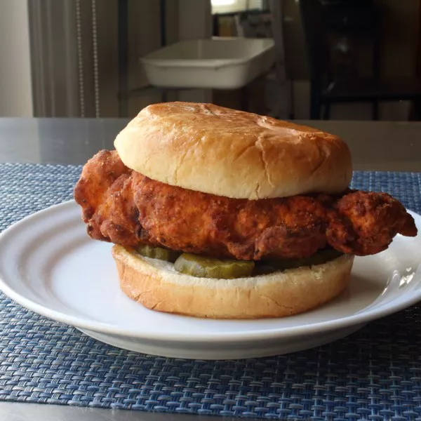

Fried Chicken Sandwich

This is a recipe for anyone who wants a chicken sandwich on a Sunday afternoon.
Marinade:
- 1 cup buttermilk
- 2 teaspoons kosher salt
- 1 dash hot sauce, or to taste
- 1 tablespoon dry ranch dressing mix
- 4(5 ounce) skinless,boneless chicken breast halves
Breading:
- 1 1/3 cups all-purpose flour
- 2 tablespoons cornstarch
- 2 teaspoons kosher salt
- 1/2 teaspoon freshly ground black pepper
- 1 1/2 teaspoons cayenne pepper (Optional)
- 1 tablespoon dry ranch dressing mix
Wash:
- 1 large egg, beaten
- 1/2 cup buttermilk
- 1/4 cup milk
The Rest:
- canola oil for frying
- 4 soft hamburger buns, toasted and buttered
- 6 tablespoons mayonnaise, or to taste
- 12 dill pickle slices, or to taste
Home